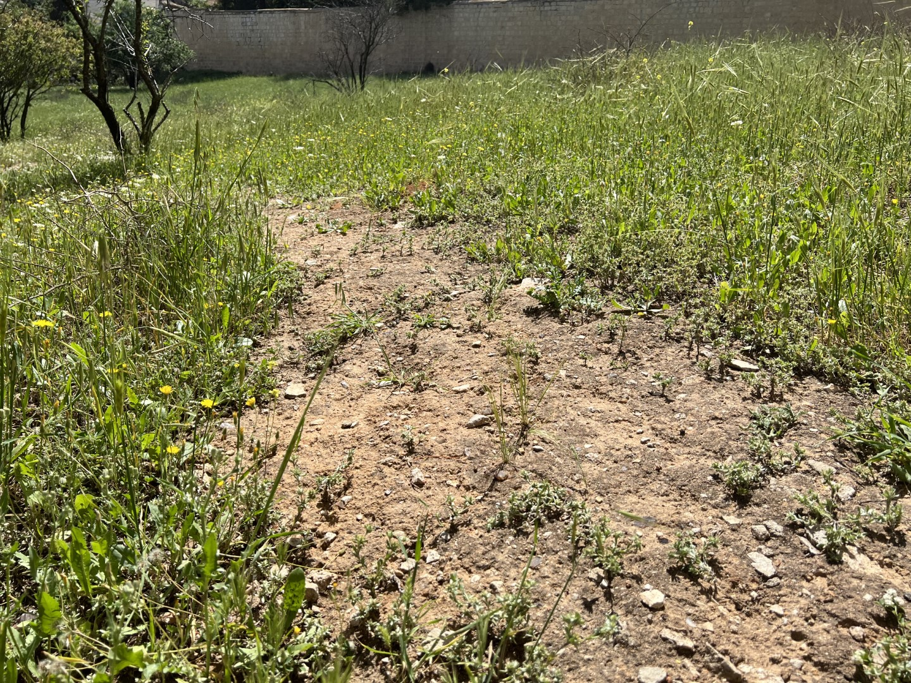
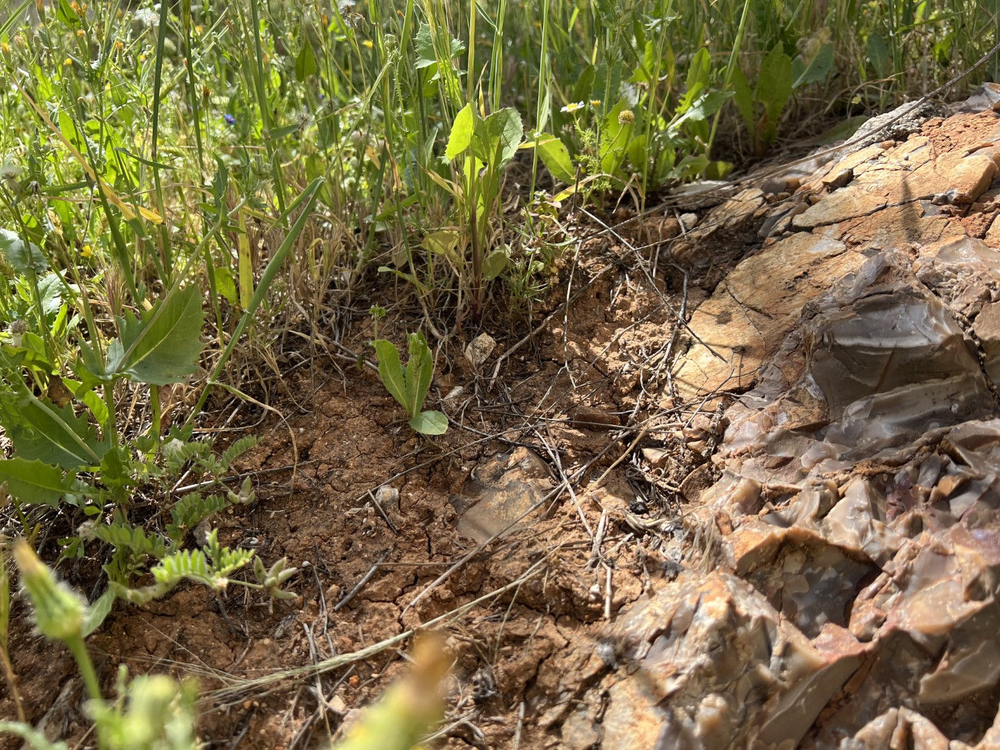
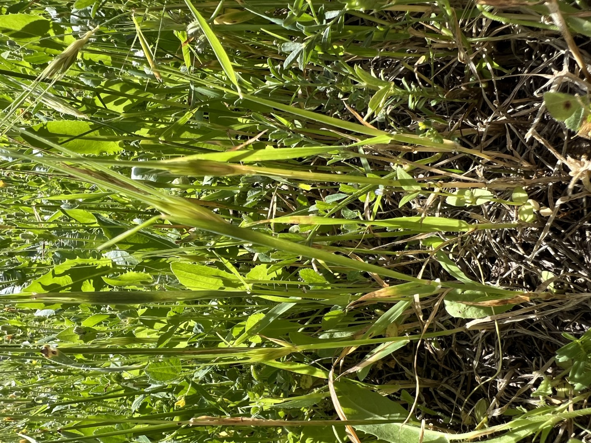
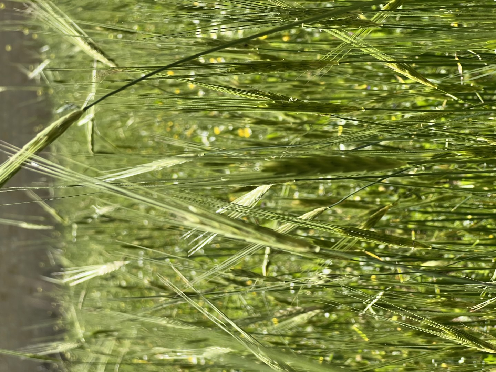

The Word Became Flesh
Transformational growth through hearing and responding to the Living Word of God.
"But other seed fell on good ground and yielded a crop that sprang up, increased and produced: some thirtyfold, some sixty, and some a hundred."
Read Mark 4 →Seed4Soil exists to see people encounter the living Word of God and be changed by it. We train disciples and disciplemakers in oral, story-based Bible engagement — accessible methods rooted in how Jesus himself taught — so that communities can hear Scripture, experience it together, and respond.
Begin where Jesus began: with a sower, a seed, and four soils. This one parable is the key to all the parables — and the foundation of everything Seed4Soil teaches. The seed is God's Word. The soil is the human heart.
Explore the Four Soils →Discover the five strategies Jesus used to plant God's Word in human hearts — Plant, Hear, Discover, Space, and Trust. Not five lessons, but five acts of one living practice that equals abiding.
View All Strategies →You don't have to wait for a training to begin. Learn one Bible story in ten minutes and tell it to someone this week — your family, a friend, your children. The Word is planted one story at a time.
Learn your first story →"Do you not understand this parable? How then will you understand all the parables?" - Jesus

"And these are the ones by the wayside where the word is sown. When they hear, Satan comes immediately and takes away the word that was sown in their hearts." — Mark 4:15
Explore Wayside Soil →
"These likewise are the ones sown on stony ground who, when they hear the word, immediately receive it with gladness; and they have no root in themselves." — Mark 4:16–17
Explore Stony Soil →
"Now these are the ones sown among thorns; they are the ones who hear the word, and the cares of this world, the deceitfulness of riches, and the desires for other things entering in choke the word." — Mark 4:18–19
Explore Thorny Soil →
"But these are the ones sown on good ground, those who hear the word, accept it, and bear fruit: some thirtyfold, some sixty, and some a hundred." — Mark 4:20
Explore Good Soil →Modeled after how Jesus himself taught — by story, dialogue, invitation, and experience.
Discipleship and outreach trainings using oral, experiential, and inductive Bible study methodology, featuring Bible storytelling and dialogue. Email us at info@seed4soil.org with your questions and requests.
Foundational practices and principles for effective Word engagement — Six Bible storytelling and dialogue sessions, four small group storytelling activities, and five teaching sessions. Typical format: 2-3 day intensive.
Learn more →Intermediate level Bible storytelling and dialogue training building deeper practice and application of oral inductive Bible study methodology.
Learn more →Training for leaders to build a culture of ongoing, transformational Scripture engagement both personally and within a congregation, ministry, or community.
Learn more →Training for oral communities to learn and practice the 7 Steps for Bible Storytelling & Dialogue and 7 Strategies to bring God's Word to oral learning communities around the world.
Learn more →Not every group needs a standard training format. Seed4Soil offers custom workshops and Word engagement events shaped around the specific needs of a congregation, ministry team, cross-cultural workers, or oral learning community. These begin not with a curriculum but with a question: What does this group most need in order to hear, receive, and share God's Word?
Get in touch →I felt as if I became better soil to receive the Word… But I also learned to be a better sower — how to share with others of all backgrounds.
What I have gotten — no one can take from me.
I just felt like God is here speaking to us through His Words.
"Listen! Behold, a sower went out to sow. And it happened, as he sowed, that some seed fell by the wayside; and the birds of the air came and devoured it. Some fell on stony ground… and because it had no root it withered away. And some seed fell among thorns; and the thorns grew up and choked it, and it yielded no crop. But other seed fell on good ground and yielded a crop that sprang up, increased and produced: some thirtyfold, some sixty, and some a hundred."
"But these are the ones sown on good ground, those who hear the word, accept it, and bear fruit: some thirtyfold, some sixty, and some a hundred."
Do you want to host a Word Engagement training? We'd love to connect.